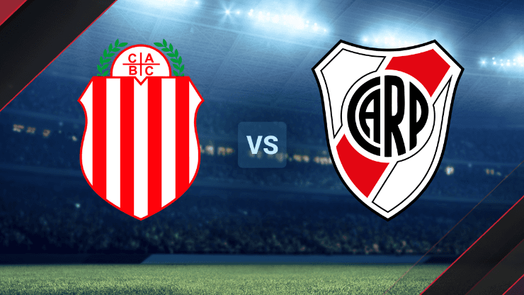
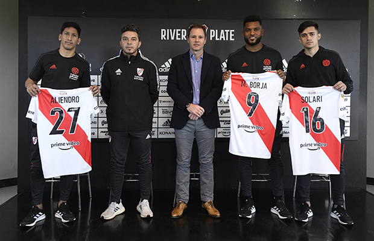
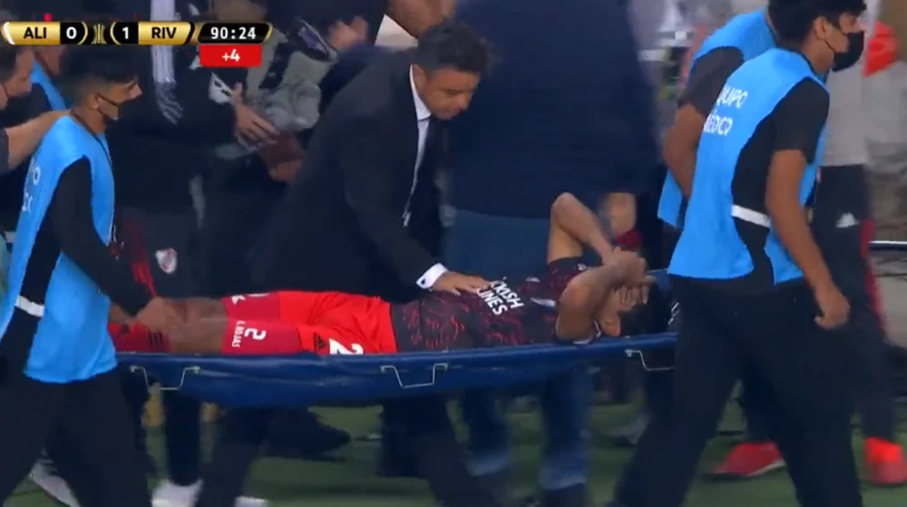

La Millo Web
about
contacto
Fixture
Torneos
Reserva
Futbol Femenino
En el Estadio Único de Villa Mercedes, de San Luis, River Plate y Barracas Central se verán las caras este miércoles 13 de julio, en el marco de los Dieciseisavos de Final de la Copa Argentina 2022.

Refuerzos

Lesionados

Julian presentado en el City
Fondos de pantalla 😉